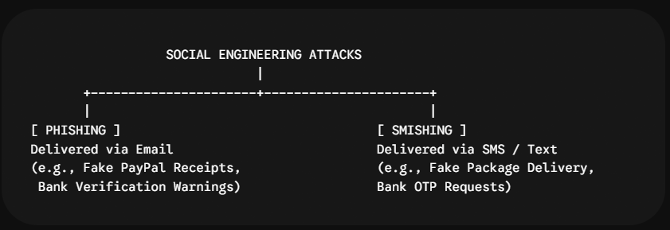

Deception in Your Inbox and Inbox Messages: How to Spot Phishing and Smishing Before It’s Too Late
We like to think of cyber attacks as complex, Hollywood-style code breaches breaking through heavy firewalls. But the truth is much simpler: the easiest way into any secure system is through human trust.
Rather than trying to hack past multi-billion-dollar security infrastructure, cybercriminals prefer to send a deceptive message and ask you to hand over your password, credit card number, or social security details directly.
These social engineering tactics are known as Phishing and Smishing. Here is a practical, non-technical guide to understanding how they work, how to spot them instantly, and how to stay protected.
1. What Are Phishing and Smishing?
While both attacks share the same ultimate goal—tricking you into surrendering sensitive information or downloading malware—they deliver their traps through different channels:

- Phishing (Email): Deceptive emails designed to masquerade as reputable organizations (like your bank, Amazon, Netflix, or your company’s HR department). They typically direct you to a fake website that looks identical to the real thing to harvest your login credentials.
- Smishing (SMS / Text Phishing): Phishing attacks delivered over SMS or messaging apps (WhatsApp, Signal, Telegram). Because people view SMS as more personal and respond to text messages much faster than emails, smishing currently boasts extremely high success rates.
2. Anatomy of an Attack: How They Trick You
Phishing and smishing do not rely on technology alone; they rely on psychology. Attackers deliberately construct their messages to trigger one of three primary emotional responses:
- Urgency: “Your account will be suspended in 24 hours unless you verify your identity.”
- Fear: “Unusual login detected from Moscow. Click here to secure your account.”
- Greed / Relief: “You have an unclaimed $250 refund waiting from your postal service.”
By forcing your brain into a state of panic or excitement, the attacker hopes you will click the link before stopping to analyze the details.
3. Red Flags: How to Instantly Recognize Phishing & Smishing
[ SUSPECT SMS / EMAIL ] |-- 1. Sender Address Check ---------> Does it match official domain? (e.g., support@paypaI-security.com) |-- 2. Link Preview Check -----------> Hover over link. Is it the real domain or a shortener/misspelled URL? |-- 3. Urgency & Panic Test ---------> Does it threaten immediate account deletion or financial loss? |-- 4. Personal Info Request -------> Is a bank asking for your password, PIN, or 2FA code over text?
A. Common Phishing Email Red Flags
- Mismatched Sender Domains: The sender display name might say “PayPal,” but hovering over or clicking the actual email address reveals something like support@paypaI-verify-login.com or a random Gmail account.
- Generic Greetings: Messages that start with “Dear Customer” or “Valued User” instead of your actual name.
- Suspicious Links: Hyperlinks that point to misspelled domains (arnazon.com instead of amazon.com) or rely on URL shorteners (bit.ly, tinyurl) to obscure the destination.
- Unexpected Attachments: Emails containing attached files like .zip, .exe, or .pdf asking you to review an “overdue invoice.”
B. Common Smishing SMS Red Flags
- Package Delivery Scams: Texts claiming a package cannot be delivered due to an incomplete street address or unpaid $1.50 customs fee.
- Bank & Security Alerts: Messages asking you to verify a transaction or enter a 2-factor authentication (2FA) code via a provided link.
- Strange Phone Numbers: Texts originating from standard 10-digit consumer mobile numbers or international shortcodes claiming to be an official automated system from a major corporation.
4. How to Protect Yourself: The Safety Checklist
Deploy these habits to keep your accounts and devices secure:
1. Follow the “Rule of Out-of-Band Verification”
Never click links inside unverified emails or text messages. If you receive an urgent text from your bank or a package delivery service:
- Close the message.
- Open your browser independently or launch the official app.
- Log into your account directly, or call the customer service number listed on the back of your bank card.
2. Never Share 2FA Codes or Master Passwords
No legitimate company, bank, or support representative will ever text or call you to ask for your account password or a 6-digit Multi-Factor Authentication (MFA/2FA) passcode. Anyone asking for these codes is attempting to hijack your session.
3. Use Passkeys & Hardware Security Keys
Traditional 2FA codes sent via SMS can be intercepted or stolen via phishing sites. Upgrading your account security to Passkeys or physical hardware keys (like YubiKeys) makes phishing virtually impossible because passkeys check the exact website domain name cryptographically before authenticating.
4. Enable Spam Filters & Report Malicious Messages
- iOS: Enable Settings > Messages > Filter Unknown Senders.
- Android: Enable Messages Settings > Spam Protection.
- Forward spam SMS messages to 7726 (SPAM)—a free reporting service supported by many telecom providers in many countries.
Final Thoughts
Technology alone cannot block every malicious message from hitting your phone or inbox. The most effective line of defense is a brief pause: whenever a message demands immediate action or threatens consequences, treat it as suspect until verified independently.